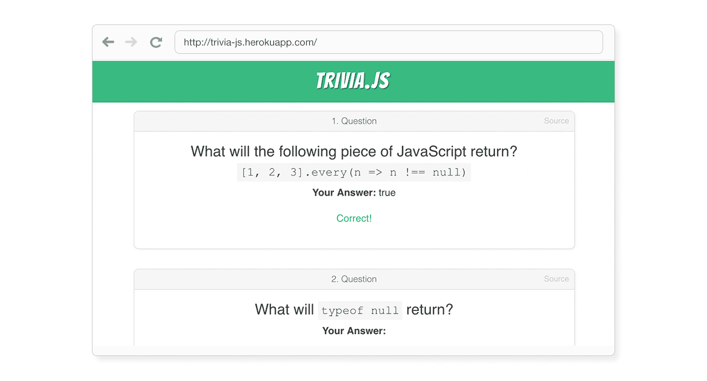
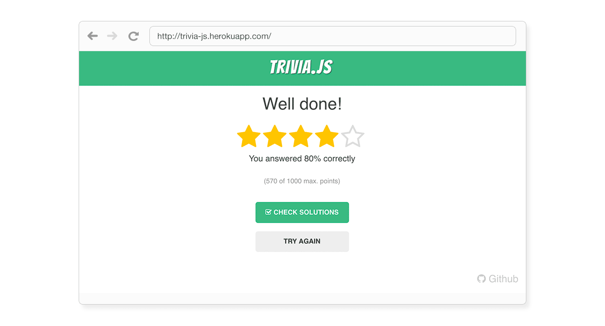
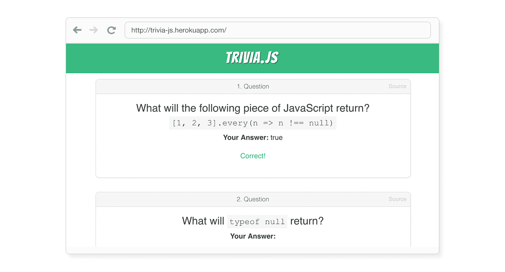
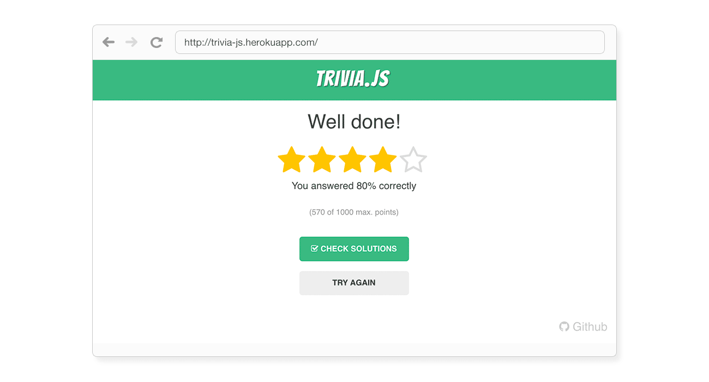
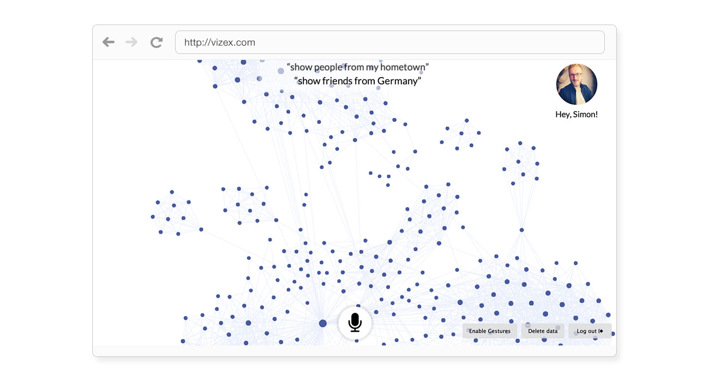
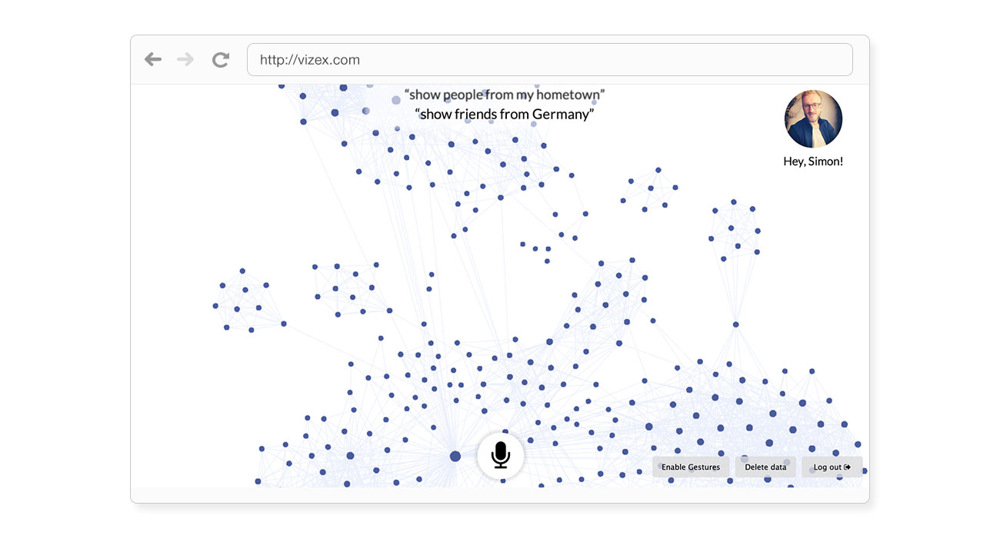

I'm a designer and hacker.
I love building products for the digital age.
I am currently supporting REWE in scaling their food delivery business in Germany. Before that I helped Babbel in bringing language learning to everyone. Previously, I did a graduate degree in the field of Human-Computer Interaction at the University of Twente (Netherlands) and KTH (Sweden). My academic focus was on natural language processing, data visualization and multimodal interaction. Between my bachelor and graduate studies I worked as a designer and web developer for one and a half years. So far, I've been living in London, Berlin, Stockholm, Enschede and Cologne. In my spare time I read, cook, travel and photograph. If you want to know more, take a look at my CV.
My Competencies
Web Development
I’m a Javascript-Enthusiast and like to fiddle with the latest frontend frameworks. I've been using AngularJS for about 3 years and recently switched to React. I’ve also taken small steps into the backend using Node.js and Python.
Interaction Design
I love working on prototypes, thinking about information architecture or evaluating the usability of an existing piece of software.
Innovation
I know a thing or two about business development and startups and I'm interested in how companies address the challenge of the digital transformation.
“The good news about computers is that they do what you tell them to do. The bad news is that they do what you tell them to do.”
Ted Nelson
Here are my most recent projects

TRIVIA.JS
trivia.js is a fun way to test your Javascript knowledge and become a better programmer. It is based on the new frontend framework vue.js and powered by a node.js server.

VIZEX
VIZEX is an interactive visualization of a user's Facebook Social Graph. It allows the user to query certain features of the network and be presented with a visual result.

Expense Tracker
A mobile spending tracker that provides a visual representation of one's spendings throughout a month.
Touching Stories
Touching stories is a novel way of interacting with the Dutch folktale database. Utilising a touch-table the system facilitates the exploration of the database through tangible objects and touch-input.
TRIVIA.JS – A fun way to test your Javascript knowledge
trivia.js is a fun way to test your Javascript knowledge and become a better programmer. It is based on the new frontend framework vue.js and powered by a node.js server.
  
 VIZEX – Facebook Graph Speech Exploration
VIZEX is an interactive visualization of a user's Facebook Social Graph. It allows the user to query certain features of the network and be presented with a visual result.
 
Expense Tracker
The aim was to design and develop an expense tracking app, which allows users to track the amount of money they spent in a straightforward way. The spendings are grouped in categories and visualized throughout the month.
Touching Stories - A Tangible Exploration of the Dutch Folktale Database
Touching stories is a novel way of interacting with the Dutch folktale database. Utilising a touch-table the system facilitates the exploration of the database through tangible objects and touch-input and furthermore allows users to see relations between stories, locations and characters.
“Design is not just what it looks like and feels like. Design is how it works.”
Steve Jobs
Not fed up yet? Here are some fun facts.
32 countries
I love travelling! I've been to Malaysia, Mongolia, Estonia, China, Japan and many more ...
12,263 pictures
During my travels I take a lot of pictures. Take a look at a few of them here.
123,274 km
Okay, I made this up ;-) But I really love biking and I take my bike wherever I go.
267 matches
That's how often I supported my favourite football club live in the stadium.
Let's keep in touch!
Whether you want to know more about me or the projects I worked on, I'm looking forward to your message.